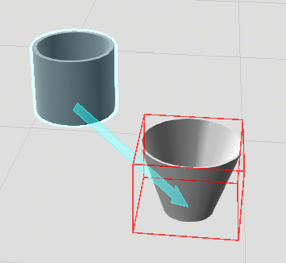

Прикрепление компонентов |
|
Компонент может быть прикреплен к узлу в другом компоненте для формирования отношения родитель-потомок. Это позволяет компонентам перемещаться и влиять друг на друга в трехмерном мире. Например, инструмент, установленный на конце манипулятора робота, будет двигаться вместе с роботом, потому что инструмент прикреплен к фланцевому узлу/монтажной пластине робота. Некоторые компоненты предназначены для автоматического присоединения друг к другу с помощью интерфейсов, например, инструменты на конце руки и съемные датчики конвейера. Когда вы выбираете компонент, синяя стрелка указывает, к какому компоненту прикреплен выбранный компонент в трехмерном мире. Если компонент не прикреплен к узлу в другом компоненте, компонент присоединен к 3D-миру (корневому узлу моделирования). Когда вы Прикрепляете выбранный компонент, красная ограничивающая рамка используется для обозначения узла компонента, на который вы указываете в 3D-мире. 1.В трехмерном мире выберите компоненты, которые вы хотите прикрепить к другому компоненту. 2.На вкладка Главная, в группе Соединить, нажмите Прикрепить . 3.В трехмерном мире наведите указатель на узел компонента, к которому вы хотите прикрепить выделенное, а затем нажмите на этот узел.
 Примечание: Присоединение компонента не привязывает и не подключает его к другому компоненту. Вы формируете иерархию, в которой изменения родительского объекта влияют на присоединенные к нему компоненты. Например, удаление родителя и это приведет к удалению связанных с ним компонентов. |